tutorial_1
1 1
Loading some packages
library(network)## Warning: package 'network' was built under R version 4.5.3##
## 'network' 1.20.0 (2026-02-06), part of the Statnet Project
## * 'news(package="network")' for changes since last version
## * 'citation("network")' for citation information
## * 'https://statnet.org' for help, support, and other informationlibrary(igraph)##
## Attaching package: 'igraph'## The following objects are masked from 'package:network':
##
## %c%, %s%, add.edges, add.vertices, delete.edges, delete.vertices, get.edge.attribute,
## get.edges, get.vertex.attribute, is.bipartite, is.directed, list.edge.attributes,
## list.vertex.attributes, set.edge.attribute, set.vertex.attribute## The following objects are masked from 'package:stats':
##
## decompose, spectrum## The following object is masked from 'package:base':
##
## unionlibrary(reshape2)
library(tidyverse)## ── Attaching core tidyverse packages ───
## ✔ dplyr 1.1.4 ✔ readr 2.1.6
## ✔ forcats 1.0.1 ✔ stringr 1.6.0
## ✔ ggplot2 4.0.2 ✔ tibble 3.3.1
## ✔ lubridate 1.9.5 ✔ tidyr 1.3.2
## ✔ purrr 1.2.1## ── Conflicts ── tidyverse_conflicts() ──
## ✖ lubridate::%--%() masks igraph::%--%()
## ✖ dplyr::as_data_frame() masks tibble::as_data_frame(), igraph::as_data_frame()
## ✖ purrr::compose() masks igraph::compose()
## ✖ tidyr::crossing() masks igraph::crossing()
## ✖ dplyr::filter() masks stats::filter()
## ✖ dplyr::lag() masks stats::lag()
## ✖ purrr::simplify() masks igraph::simplify()
## ℹ Use the conflicted package (<http://conflicted.r-lib.org/>) to force all conflicts to become errors1.1.1 From adjacency matrix to igraph
url1 <- "https://github.com/rensec/sasr08/raw/main/g_adj_matrix_simple.csv"
g_matrix <- read.csv(file = url1, header = FALSE)
g_matrix## V1 V2 V3 V4 V5
## 1 0 1 0 1 0
## 2 0 0 1 0 0
## 3 1 0 0 0 0
## 4 0 0 0 0 0
## 5 0 0 0 0 0class(g_matrix)## [1] "data.frame"g_matrix <- as.matrix(g_matrix)
g_matrix## V1 V2 V3 V4 V5
## [1,] 0 1 0 1 0
## [2,] 0 0 1 0 0
## [3,] 1 0 0 0 0
## [4,] 0 0 0 0 0
## [5,] 0 0 0 0 0rownames(g_matrix) <- 1:nrow(g_matrix)
colnames(g_matrix) <- 1:ncol(g_matrix)
g_matrix## 1 2 3 4 5
## 1 0 1 0 1 0
## 2 0 0 1 0 0
## 3 1 0 0 0 0
## 4 0 0 0 0 0
## 5 0 0 0 0 0# Answer: 5 nodes, 4 edges
g_nodes_age <- read.csv(file = "https://github.com/rensec/sasr08/raw/main/g_nodes_age.csv")
g_nodes_age## id age
## 1 1 20
## 2 2 21
## 3 3 25
## 4 4 NA
## 5 5 21g <- graph_from_adjacency_matrix(g_matrix)
class(g)## [1] "igraph"g## IGRAPH bff43cd DN-- 5 4 --
## + attr: name (v/c)
## + edges from bff43cd (vertex names):
## [1] 1->2 1->4 2->3 3->1plot(g)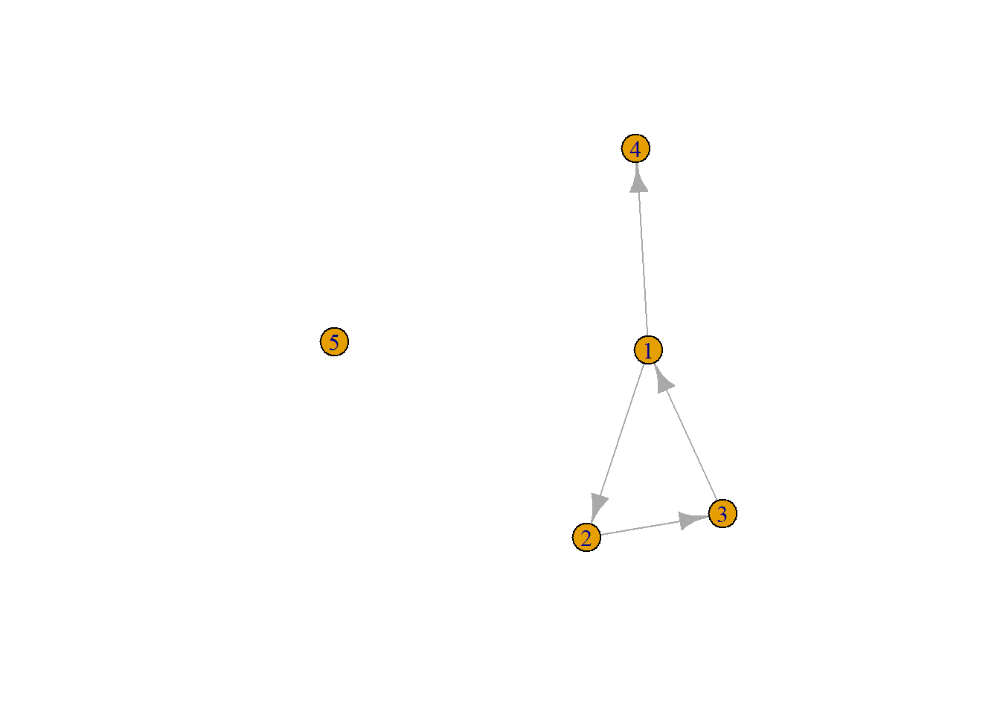
g <- set_vertex_attr(g,
name = "age",
value = g_nodes_age$age)1.1.2
g_elist <- read.csv(file = "https://github.com/rensec/sasr08/raw/main/g_elist.csv")
g_elist## from to
## 1 1 2
## 2 2 3
## 3 3 1
## 4 1 4g_from_elist <- graph_from_data_frame(g_elist)
plot(g_from_elist)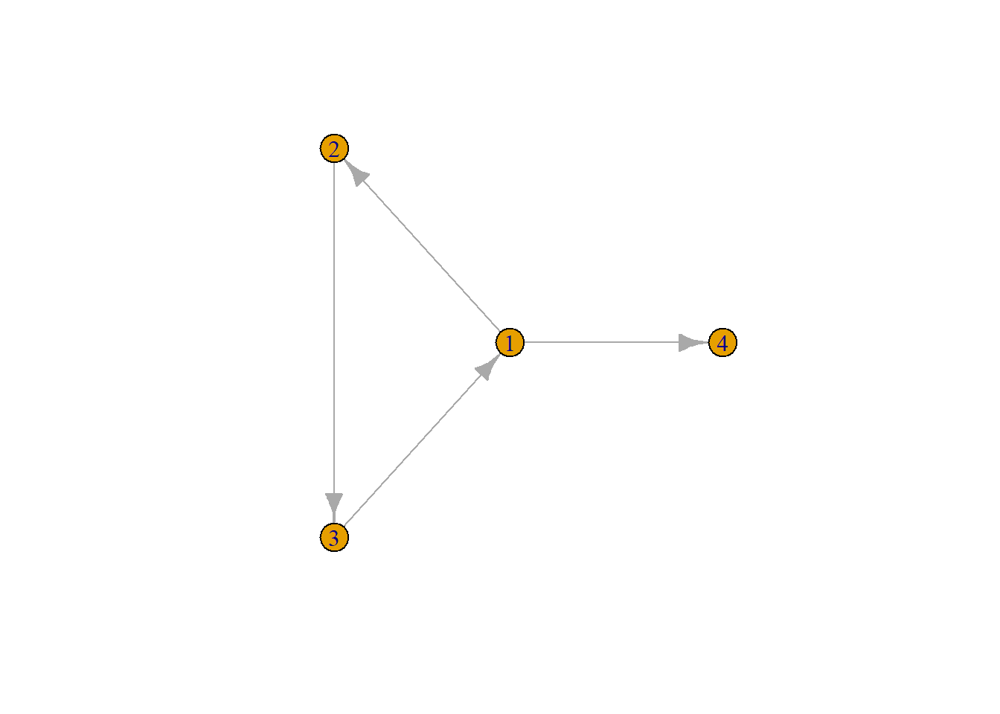
g_from_elist <- graph_from_data_frame(g_elist, vertices = g_nodes_age)
plot(g_from_elist)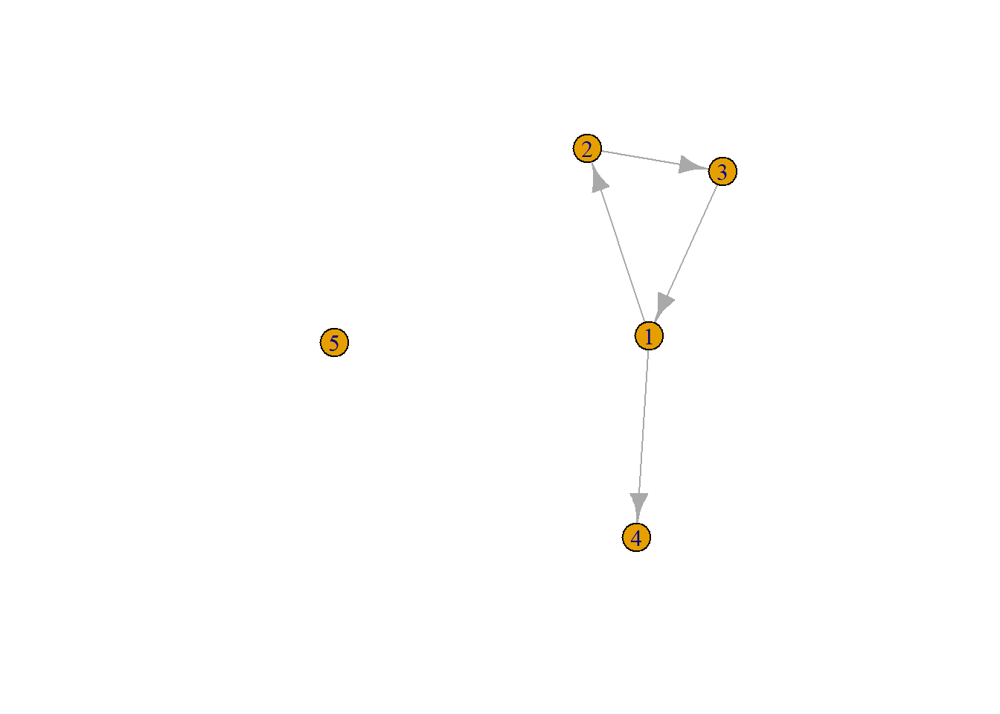
# Assignment:
igraph_from_elist <- graph_from_data_frame(g_elist, vertices = g_nodes_age) %>%
plot()1.1.3
g_adj_list <- read.csv(file = "https://github.com/rensec/sasr08/raw/main/g_adj_list.csv")
g_adj_list## id age friend1 friend2
## 1 1 20 2 4
## 2 2 21 3 NA
## 3 3 25 1 NA
## 4 4 NA NA NA
## 5 5 21 NA NAg_elist_from_alist <- g_adj_list
g_elist_from_alist <- select(g_elist_from_alist, id, friend1:friend2) # keep only the network variables (and id)
g_elist_from_alist <- melt(g_elist_from_alist, id.vars = "id") # from the reshape2 package
g_elist_from_alist## id variable value
## 1 1 friend1 2
## 2 2 friend1 3
## 3 3 friend1 1
## 4 4 friend1 NA
## 5 5 friend1 NA
## 6 1 friend2 4
## 7 2 friend2 NA
## 8 3 friend2 NA
## 9 4 friend2 NA
## 10 5 friend2 NAg_elist_from_alist <- g_adj_list %>%
select(id, friend1:friend2) %>% # keep only the network variables (and id)
melt( id.vars = "id") # from the reshape2 package
g_adj_list %>% # (we don't save it into an object as above this time, since we just want to show that the result is the same)
select(id, friend1:friend2) %>% #keep only the network variables (and id)
pivot_longer(c(friend1, friend2))## # A tibble: 10 × 3
## id name value
## <int> <chr> <int>
## 1 1 friend1 2
## 2 1 friend2 4
## 3 2 friend1 3
## 4 2 friend2 NA
## 5 3 friend1 1
## 6 3 friend2 NA
## 7 4 friend1 NA
## 8 4 friend2 NA
## 9 5 friend1 NA
## 10 5 friend2 NAg_elist_from_alist <- g_elist_from_alist%>%
filter(!is.na(value)) %>% # drop the missings
rename(from ="id", to = "value", sourcevar= "variable") %>% #just nice for interpretation
relocate(to, .after=from) #move around the columns
# Answer: To keep track of the meaning of ties. For example, the first friend people list may be the best friend.
g_elist_from_alist## from to sourcevar
## 1 1 2 friend1
## 2 2 3 friend1
## 3 3 1 friend1
## 4 1 4 friend2g_from_alist <- graph_from_data_frame(g_elist_from_alist) #This is a proper igraph graph object
plot(g_from_alist)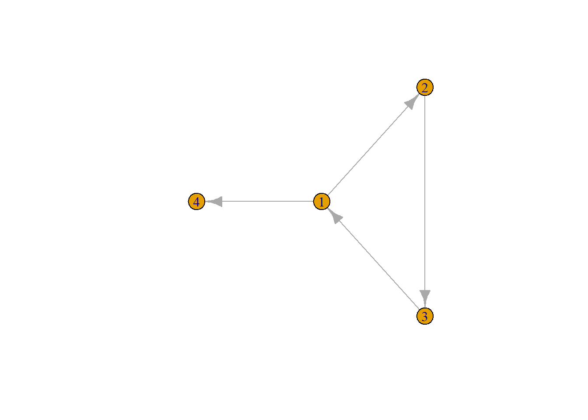
nodelist <- select(g_adj_list,id,age)
g_from_alist <- graph_from_data_frame(g_elist_from_alist, vertices = nodelist) #This is a proper igraph graph object
plot(g_from_alist)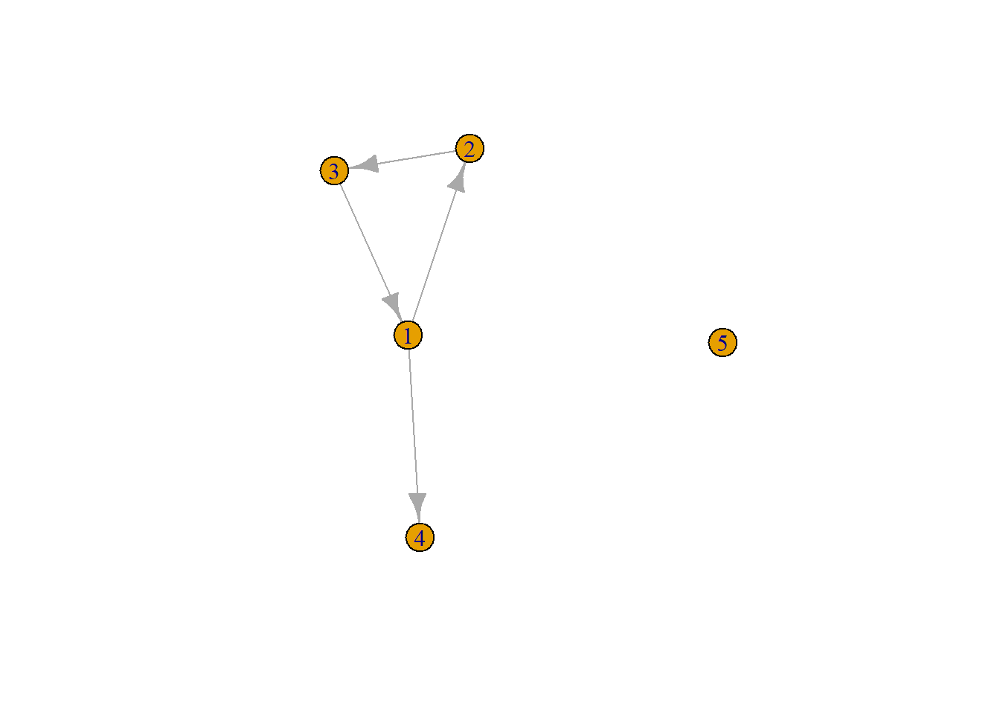
# Assignment
g_elist_from_alist <- g_adj_list %>%
select(id, friend1:friend2) %>%
melt(id.vars = "id") %>%
filter(!is.na(value)) %>%
rename(from ="id", to = "value", sourcevar= "variable") %>%
relocate(to, .after=from)
g_from_aalist <- graph_from_data_frame(
g_elist_from_alist,
vertices = select(g_adj_list, id, age)
)
plot(g_from_aalist)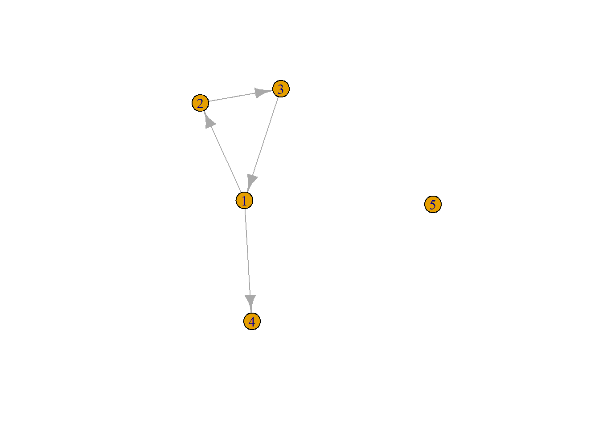
1.2.1g_adj_matrix <- as_adjacency_matrix(g, sparse = FALSE)
g_adj_matrix## 1 2 3 4 5
## 1 0 1 0 1 0
## 2 0 0 1 0 0
## 3 1 0 0 0 0
## 4 0 0 0 0 0
## 5 0 0 0 0 0all(g_adj_matrix == g_matrix)## [1] TRUE1.2.2
g_edgelist <- igraph::as_data_frame(g_from_elist, what = "edges")
g_edgelist ## from to
## 1 1 2
## 2 2 3
## 3 3 1
## 4 1 4igraph::as_data_frame(g_from_elist, what = "vertices") ## name age
## 1 1 20
## 2 2 21
## 3 3 25
## 4 4 NA
## 5 5 211.2.3
edgelist_2 <- igraph::as_data_frame(g_from_alist, what = "edges")
nodelist_2 <- igraph::as_data_frame(g_from_alist, what = "vertices")
# Note the use of the "namespace" "igraph::" here, to indicate that we need the igraph function here, not the function with the same name from the dplyr/tidyverse package
d <- edgelist_2 %>%
rename(id = "from") %>%
pivot_wider( id_cols = id, names_from = sourcevar, values_from = to ) %>%
merge(nodelist_2, by.x = "id", by.y = "name", all.y = TRUE ) %>%
relocate(age, .after = id) %>%
type_convert() #as_data_frame returns characters; this transforms it back to numeric##
## ── Column specification ────────────────
## cols(
## id = col_double(),
## friend1 = col_double(),
## friend2 = col_double()
## )d## id age friend1 friend2
## 1 1 20 2 4
## 2 2 21 3 NA
## 3 3 25 1 NA
## 4 4 NA NA NA
## 5 5 21 NA NA1.3
g_np <- as.network(g_elist_from_alist, matrix.type = "edgelist", vertices = nodelist)
g_np## Network attributes:
## vertices = 5
## directed = TRUE
## hyper = FALSE
## loops = FALSE
## multiple = FALSE
## bipartite = FALSE
## total edges= 4
## missing edges= 0
## non-missing edges= 4
##
## Vertex attribute names:
## age vertex.names
##
## Edge attribute names:
## sourcevarplot(g_np)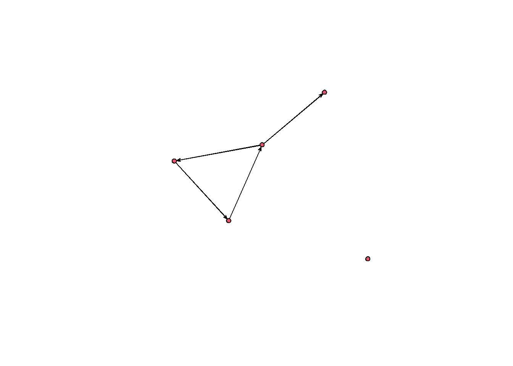
1.4g_mod <- delete_vertices(g,2)
plot(g_mod)
g_mod <- delete_vertices(g,which(V(g)$age == 21))
plot(g_mod)
# Assignment
g_mod <- delete.vertices(g,which(is.na(V(g)$age)))## Warning: `delete.vertices()` was deprecated in
## igraph 2.0.0.
## ℹ Please use `delete_vertices()`
## instead.
## This warning is displayed once per
## session.
## Call
## `lifecycle::last_lifecycle_warnings()`
## to see where this warning was
## generated.plot(g_mod)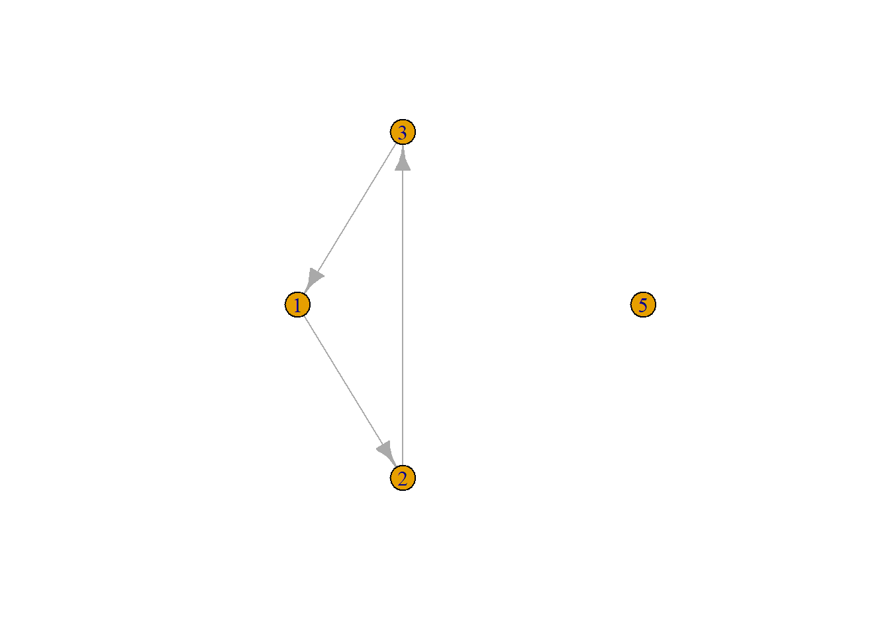
V(g)$gender <- c("male", "female", "female", "other", "male")
g## IGRAPH bff43cd DN-- 5 4 --
## + attr: name (v/c), age (v/n), gender (v/c)
## + edges from bff43cd (vertex names):
## [1] 1->2 1->4 2->3 3->1g_rev <- reverse_edges(g)
plot(g_rev)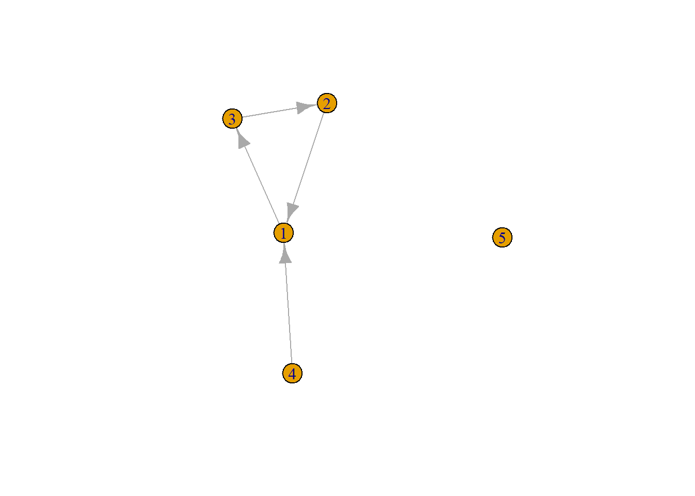
g_union <- igraph::union(g, g_rev)
# Answer: All arrows will be two-sided?
plot(g_union)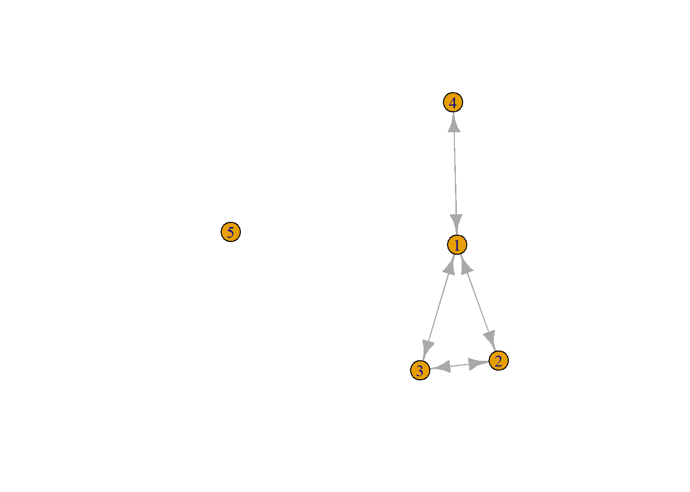
g_undir <- as_undirected(g)
plot(g_undir)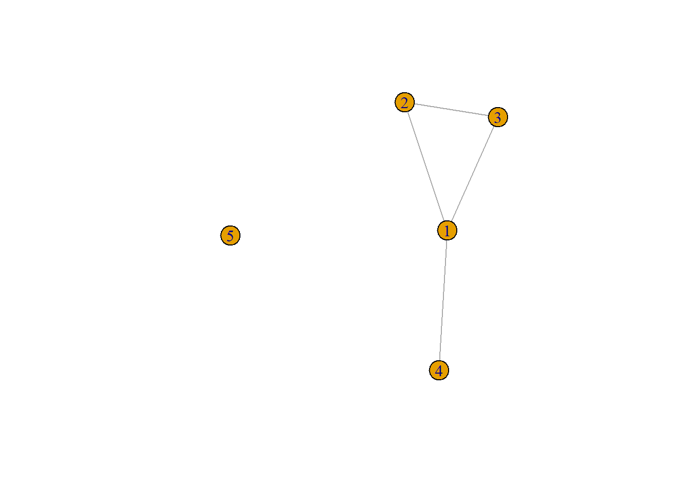
# Answer: One is undirected and one is directed in both directions.2 2
library(igraph)
z <- make_graph("Zachary")
z## IGRAPH c15882d U--- 34 78 -- Zachary
## + attr: name (g/c)
## + edges from c15882d:
## [1] 1-- 2 1-- 3 1-- 4 1-- 5 1-- 6 1-- 7 1-- 8 1-- 9 1--11 1--12 1--13 1--14 1--18
## [14] 1--20 1--22 1--32 2-- 3 2-- 4 2-- 8 2--14 2--18 2--20 2--22 2--31 3-- 4 3-- 8
## [27] 3--28 3--29 3--33 3--10 3-- 9 3--14 4-- 8 4--13 4--14 5-- 7 5--11 6-- 7 6--11
## [40] 6--17 7--17 9--31 9--33 9--34 10--34 14--34 15--33 15--34 16--33 16--34 19--33 19--34
## [53] 20--34 21--33 21--34 23--33 23--34 24--26 24--28 24--33 24--34 24--30 25--26 25--28 25--32
## [66] 26--32 27--30 27--34 28--34 29--32 29--34 30--33 30--34 31--33 31--34 32--33 32--34 33--34plot(z)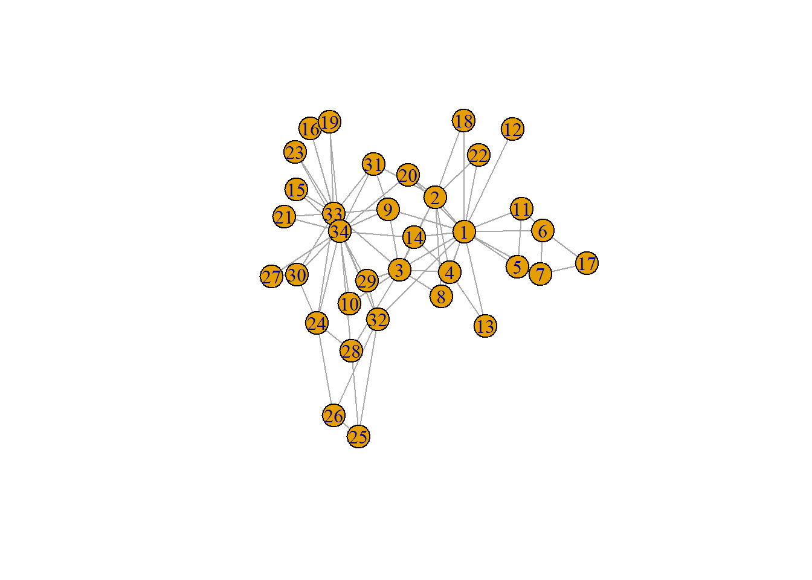
is_directed(z)## [1] FALSE2.1.1
vcount(z)## [1] 34ecount(z)## [1] 782.1.2
edge_density(z)## [1] 0.1390374z$density <- edge_density(z)
z## IGRAPH c15882d U--- 34 78 -- Zachary
## + attr: name (g/c), density (g/n)
## + edges from c15882d:
## [1] 1-- 2 1-- 3 1-- 4 1-- 5 1-- 6 1-- 7 1-- 8 1-- 9 1--11 1--12 1--13 1--14 1--18
## [14] 1--20 1--22 1--32 2-- 3 2-- 4 2-- 8 2--14 2--18 2--20 2--22 2--31 3-- 4 3-- 8
## [27] 3--28 3--29 3--33 3--10 3-- 9 3--14 4-- 8 4--13 4--14 5-- 7 5--11 6-- 7 6--11
## [40] 6--17 7--17 9--31 9--33 9--34 10--34 14--34 15--33 15--34 16--33 16--34 19--33 19--34
## [53] 20--34 21--33 21--34 23--33 23--34 24--26 24--28 24--33 24--34 24--30 25--26 25--28 25--32
## [66] 26--32 27--30 27--34 28--34 29--32 29--34 30--33 30--34 31--33 31--34 32--33 32--34 33--342.1.3
count_components(z)## [1] 12.1.4
diameter(z)## [1] 5mean_distance(z)## [1] 2.40822.1.5
transitivity(z, type="average")## [1] 0.58793062.2.1
degree(z)## [1] 16 9 10 6 3 4 4 4 5 2 3 1 2 5 2 2 2 2 2 3 2 2 2 5 3 3 2 4 3 4 4 6
## [33] 12 17summary(degree(z))## Min. 1st Qu. Median Mean 3rd Qu. Max.
## 1.000 2.000 3.000 4.588 5.000 17.000hist(degree(z))
V(z)$degree <- degree(z)
#We add + 8 to degree to avoid that the lowest-degree nodes become really small and specify margin = -0.1 to reduce the whitespace around the plot
plot(z, vertex.size = V(z)$degree+8, margin= -0.1)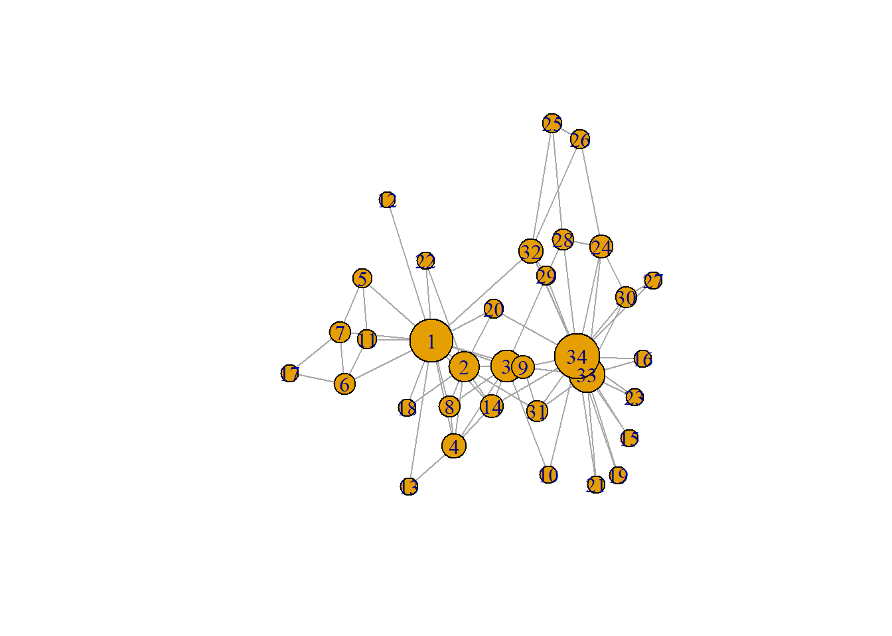
degree(z, v = 3)## [1] 102.2.2
betweenness(z)## [1] 231.0714286 28.4785714 75.8507937 6.2880952 0.3333333 15.8333333 15.8333333 0.0000000
## [9] 29.5293651 0.4476190 0.3333333 0.0000000 0.0000000 24.2158730 0.0000000 0.0000000
## [17] 0.0000000 0.0000000 0.0000000 17.1468254 0.0000000 0.0000000 0.0000000 9.3000000
## [25] 1.1666667 2.0277778 0.0000000 11.7920635 0.9476190 1.5428571 7.6095238 73.0095238
## [33] 76.6904762 160.5515873z <- z %>%
set_vertex_attr(
name = "betweenness",
value = betweenness(z)
)2.2.3
V(z)$closeness <- closeness(z)3 3
library(igraph)
library(haven) # to read Stata files
library(reshape2)
library(tidyverse)3.1
PupilsWaveV <- read_dta(file = "PupilsWaveV.dta")
head(PupilsWaveV)## # A tibble: 6 × 423
## date schoolnr namenr advice sex age place1 place2 siblings money amoufria impofria
## <dbl> <chr> <dbl> <dbl+lbl> <dbl+l> <dbl> <dbl+lb> <dbl+l> <dbl> <dbl> <dbl+lb> <dbl+lb>
## 1 1709 01a 1 NA 2 [mal… 12 NA 1 [tow… 3 NA 1 [clas… 1 [clas…
## 2 1709 01a 2 5 [VMBO-th… 2 [mal… 13 1 [fat… 1 [tow… 1 20 3 [outs… 3 [outs…
## 3 1709 01a 3 NA 1 [fem… 13 1 [fat… 1 [tow… 8 NA 2 [scho… 1 [clas…
## 4 1709 01a 4 NA 2 [mal… 13 1 [fat… 1 [tow… 2 30 2 [scho… 1 [clas…
## 5 1709 01a 5 NA 1 [fem… 13 1 [fat… 1 [tow… 2 NA 1 [clas… 1 [clas…
## 6 1709 01a 6 NA 2 [mal… 13 1 [fat… 1 [tow… 5 40 8 [clas… 1 [clas…
## # ℹ 411 more variables: pracsup1 <dbl+lbl>, pracsup2 <dbl+lbl>, pracsup3 <dbl+lbl>,
## # pracsup4 <dbl+lbl>, pracsup5 <dbl+lbl>, pracsup6 <dbl+lbl>, pracsup7 <dbl+lbl>,
## # pracsup8 <dbl+lbl>, pracsup9 <dbl+lbl>, pracsu10 <dbl+lbl>, pracsu11 <dbl+lbl>,
## # pracsu12 <dbl+lbl>, emosup1 <dbl+lbl>, emosup2 <dbl+lbl>, emosup3 <dbl+lbl>, emosup4 <dbl+lbl>,
## # emosup5 <dbl+lbl>, emosup6 <dbl+lbl>, emosup7 <dbl+lbl>, emosup8 <dbl+lbl>, emosup9 <dbl+lbl>,
## # emosup10 <dbl+lbl>, emosup11 <dbl+lbl>, emosup12 <dbl+lbl>, basis1 <dbl+lbl>, basis2 <dbl+lbl>,
## # basis3 <dbl+lbl>, basis4 <dbl+lbl>, basis5 <dbl+lbl>, basis6 <dbl+lbl>, basis7 <dbl+lbl>, …tail(PupilsWaveV)## # A tibble: 6 × 423
## date schoolnr namenr advice sex age place1 place2 siblings money amoufria impofria
## <dbl> <chr> <dbl> <dbl+lbl> <dbl+l> <dbl> <dbl+l> <dbl+l> <dbl> <dbl> <dbl+lb> <dbl+lb>
## 1 2808 14h 12 2 [LWOO/VMB… 1 [fem… 13 1 [fat… 1 [tow… 1 10 2 [scho… 2 [scho…
## 2 2808 14h 13 2 [LWOO/VMB… 1 [fem… 12 1 [fat… 1 [tow… 1 20 6 [clas… 5 [clas…
## 3 2808 14h 14 NA 2 [mal… 12 4 [pre… 1 [tow… 1 25 3 [outs… 3 [outs…
## 4 2808 14h 15 2 [LWOO/VMB… 2 [mal… 12 1 [fat… 1 [tow… 4 30 1 [clas… 1 [clas…
## 5 2808 14h 16 2 [LWOO/VMB… 1 [fem… 13 1 [fat… 1 [tow… 3 NA 3 [outs… 3 [outs…
## 6 2808 14h 17 2 [LWOO/VMB… 2 [mal… 12 2 [pre… 1 [tow… 2 NA 2 [scho… 2 [scho…
## # ℹ 411 more variables: pracsup1 <dbl+lbl>, pracsup2 <dbl+lbl>, pracsup3 <dbl+lbl>,
## # pracsup4 <dbl+lbl>, pracsup5 <dbl+lbl>, pracsup6 <dbl+lbl>, pracsup7 <dbl+lbl>,
## # pracsup8 <dbl+lbl>, pracsup9 <dbl+lbl>, pracsu10 <dbl+lbl>, pracsu11 <dbl+lbl>,
## # pracsu12 <dbl+lbl>, emosup1 <dbl+lbl>, emosup2 <dbl+lbl>, emosup3 <dbl+lbl>, emosup4 <dbl+lbl>,
## # emosup5 <dbl+lbl>, emosup6 <dbl+lbl>, emosup7 <dbl+lbl>, emosup8 <dbl+lbl>, emosup9 <dbl+lbl>,
## # emosup10 <dbl+lbl>, emosup11 <dbl+lbl>, emosup12 <dbl+lbl>, basis1 <dbl+lbl>, basis2 <dbl+lbl>,
## # basis3 <dbl+lbl>, basis4 <dbl+lbl>, basis5 <dbl+lbl>, basis6 <dbl+lbl>, basis7 <dbl+lbl>, …class12b <- PupilsWaveV %>%
filter(schoolnr == "12b") # keep only one class3.2
# 1 Adjacency list to igraph
p_elist_from_alist <- class12b %>%
select(namenr, friend1:friend12) %>%
melt(id.vars = "namenr") %>%
filter(!is.na(value)) %>%
rename(from ="namenr", to = "value", sourcevar= "variable") %>%
relocate(to, .after=from)
p_aalist <- graph_from_data_frame(p_elist_from_alist, vertices = select(class12b,namenr,age,sex))
p <- p_aalist
# 2 Checking if directed
is_directed(p)## [1] TRUE# 3 Visualize
plot(p)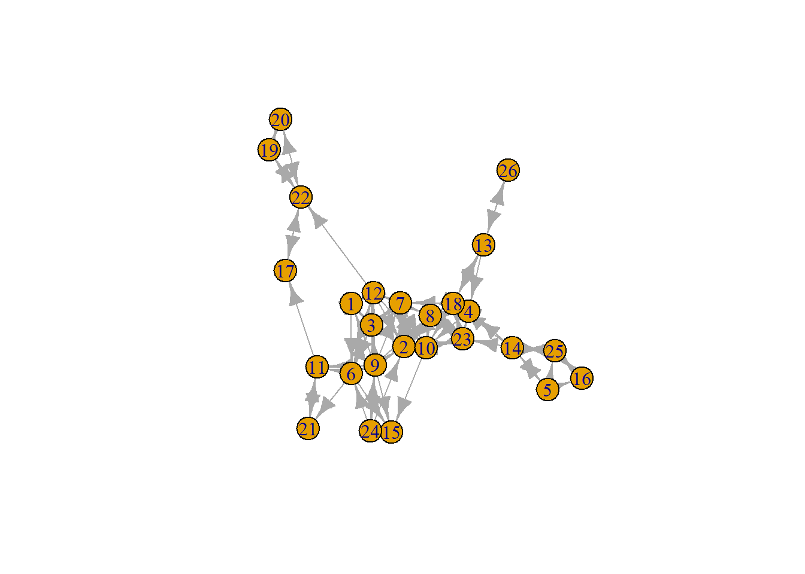
# 4 Five number summary
vcount(p)## [1] 26ecount(p)## [1] 91edge_density(p)## [1] 0.14count_components(p)## [1] 1diameter(p)## [1] 7mean_distance(p)## [1] 2.853598transitivity(p, type = "average")## [1] 0.5886984# 5 Test hypothesis that girls have higher degree than boys
deg <- degree(p)
df_deg <- data.frame(
sex = V(p)$sex,
degree = deg
)
t.test(degree~sex, data = df_deg, alternative = "greater")##
## Welch Two Sample t-test
##
## data: degree by sex
## t = 0.6062, df = 16.934, p-value = 0.2762
## alternative hypothesis: true difference in means between group 1 and group 2 is greater than 0
## 95 percent confidence interval:
## -1.589172 Inf
## sample estimates:
## mean in group 1 mean in group 2
## 7.294118 6.444444# 6
#We add + 8 to degree to avoid that the lowest-degree nodes become really small and specify margin = -0.1 to reduce the whitespace around the plot
V(p)$degree <- degree(p)
plot(p, vertex.size = V(p)$degree+8, vertex.color = V(p)$sex, margin= -0.1)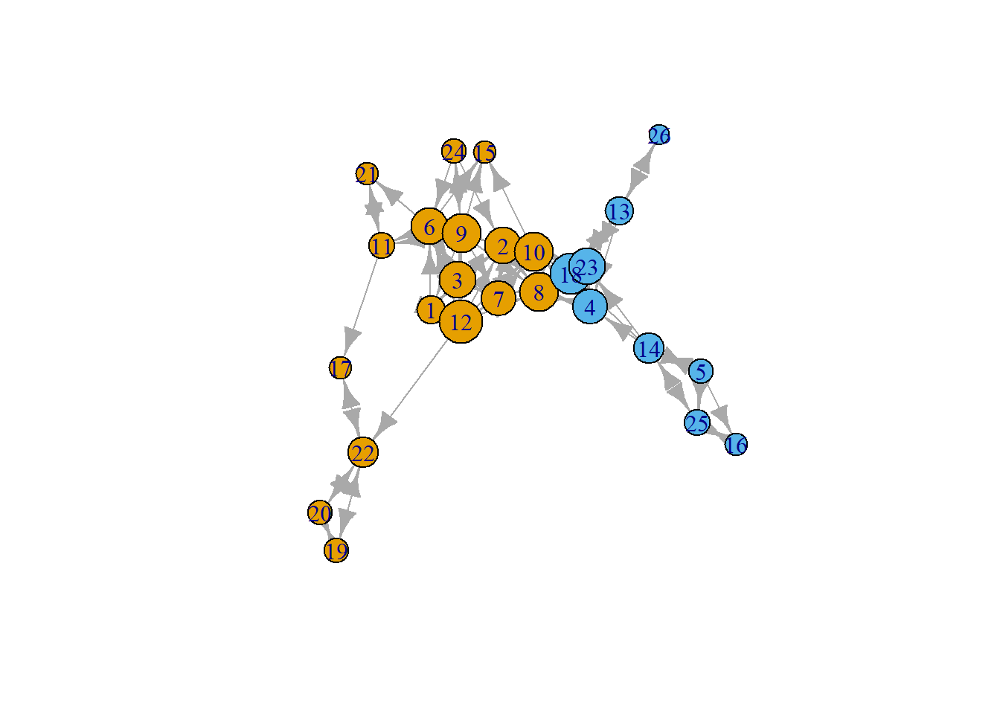
4 4
library(spdep) #We need the spdep package for the spatial weight matrix and for the Moran's I test## Warning: package 'spdep' was built under R version 4.5.3## Loading required package: spData## Warning: package 'spData' was built under R version 4.5.3## To access larger datasets in this package, install the spDataLarge package with:
## `install.packages('spDataLarge', repos='https://nowosad.github.io/drat/', type='source')`## Loading required package: sf## Warning: package 'sf' was built under R version 4.5.3## Linking to GEOS 3.14.1, GDAL 3.12.1, PROJ 9.7.1; sf_use_s2() is TRUElibrary(spatialreg) #We need the spatialreg package for the spatial lag and spatial error models## Warning: package 'spatialreg' was built under R version 4.5.3## Loading required package: Matrix##
## Attaching package: 'Matrix'## The following objects are masked from 'package:tidyr':
##
## expand, pack, unpack##
## Attaching package: 'spatialreg'## The following objects are masked from 'package:spdep':
##
## get.ClusterOption, get.coresOption, get.mcOption, get.VerboseOption,
## get.ZeroPolicyOption, set.ClusterOption, set.coresOption, set.mcOption,
## set.VerboseOption, set.ZeroPolicyOption4.1
data(columbus)
mydata <- columbus
attach(mydata)
neighbors <- col.gal.nb
class(neighbors)## [1] "nb"listw <- nb2listw(neighbors, style = "W")
summary(listw)## Characteristics of weights list object:
## Neighbour list object:
## Number of regions: 49
## Number of nonzero links: 230
## Percentage nonzero weights: 9.579342
## Average number of links: 4.693878
## Link number distribution:
##
## 2 3 4 5 6 7 8 9 10
## 7 7 13 4 9 6 1 1 1
## 7 least connected regions:
## 1005 1008 1045 1047 1049 1048 1015 with 2 links
## 1 most connected region:
## 1017 with 10 links
##
## Weights style: W
## Weights constants summary:
## n nn S0 S1 S2
## W 49 2401 49 23.48489 204.66874.2
summary(CRIME)## Min. 1st Qu. Median Mean 3rd Qu. Max.
## 0.1783 20.0485 34.0008 35.1288 48.5855 68.8920summary(INC)## Min. 1st Qu. Median Mean 3rd Qu. Max.
## 4.477 9.963 13.380 14.375 18.324 31.070summary(HOVAL)## Min. 1st Qu. Median Mean 3rd Qu. Max.
## 17.90 25.70 33.50 38.44 43.30 96.40plot(neighbors, coords)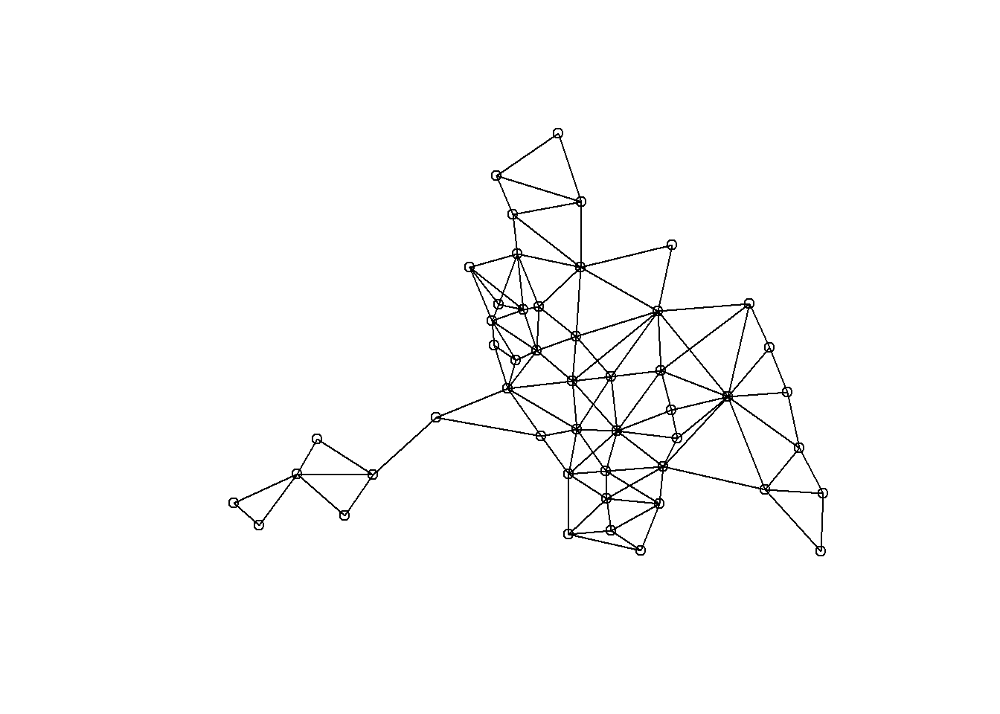
olsreg <- lm(CRIME ~ INC + HOVAL)
summary(olsreg)##
## Call:
## lm(formula = CRIME ~ INC + HOVAL)
##
## Residuals:
## Min 1Q Median 3Q Max
## -34.418 -6.388 -1.580 9.052 28.649
##
## Coefficients:
## Estimate Std. Error t value Pr(>|t|)
## (Intercept) 68.6190 4.7355 14.490 < 2e-16 ***
## INC -1.5973 0.3341 -4.780 1.83e-05 ***
## HOVAL -0.2739 0.1032 -2.654 0.0109 *
## ---
## Signif. codes: 0 '***' 0.001 '**' 0.01 '*' 0.05 '.' 0.1 ' ' 1
##
## Residual standard error: 11.43 on 46 degrees of freedom
## Multiple R-squared: 0.5524, Adjusted R-squared: 0.5329
## F-statistic: 28.39 on 2 and 46 DF, p-value: 9.341e-094.3.1
moran.test(CRIME, listw)##
## Moran I test under randomisation
##
## data: CRIME
## weights: listw
##
## Moran I statistic standard deviate = 5.3427, p-value = 4.578e-08
## alternative hypothesis: greater
## sample estimates:
## Moran I statistic Expectation Variance
## 0.485770914 -0.020833333 0.0089911214.3.2
lm.LMtests(olsreg, listw, test=c("LMlag", "LMerr"))## Please update scripts to use lm.RStests in place of lm.LMtests##
## Rao's score (a.k.a Lagrange multiplier) diagnostics for spatial dependence
##
## data:
## model: lm(formula = CRIME ~ INC + HOVAL)
## test weights: listw
##
## RSlag = 7.8557, df = 1, p-value = 0.005066
##
##
## Rao's score (a.k.a Lagrange multiplier) diagnostics for spatial dependence
##
## data:
## model: lm(formula = CRIME ~ INC + HOVAL)
## test weights: listw
##
## RSerr = 4.6111, df = 1, p-value = 0.031774.3.3
slm <- lagsarlm(CRIME ~ INC + HOVAL, data = mydata, listw, Durbin = "FALSE")
summary(slm)##
## Call:lagsarlm(formula = CRIME ~ INC + HOVAL, data = mydata, listw = listw, Durbin = "FALSE")
##
## Residuals:
## Min 1Q Median 3Q Max
## -37.4497093 -5.4565567 0.0016387 6.7159553 24.7107978
##
## Type: lag
## Coefficients: (asymptotic standard errors)
## Estimate Std. Error z value Pr(>|z|)
## (Intercept) 46.851431 7.314754 6.4051 1.503e-10
## INC -1.073533 0.310872 -3.4533 0.0005538
## HOVAL -0.269997 0.090128 -2.9957 0.0027381
##
## Rho: 0.40389, LR test value: 8.4179, p-value: 0.0037154
## Asymptotic standard error: 0.12071
## z-value: 3.3459, p-value: 0.00082027
## Wald statistic: 11.195, p-value: 0.00082027
##
## Log likelihood: -183.1683 for lag model
## ML residual variance (sigma squared): 99.164, (sigma: 9.9581)
## Number of observations: 49
## Number of parameters estimated: 5
## AIC: 376.34, (AIC for lm: 382.75)
## LM test for residual autocorrelation
## test value: 0.19184, p-value: 0.66139im<-impacts(slm, listw = listw, zstats=TRUE, R=200)
sums<-summary(im, zstats=T)
data.frame(sums$res)## direct indirect total
## 1 -1.1225156 -0.6783818 -1.8008973
## 2 -0.2823163 -0.1706152 -0.4529315data.frame(sums$pzmat)## Direct Indirect Total
## INC dy/dx 0.0003012179 0.05155406 0.00110445
## HOVAL dy/dx 0.0022396982 0.10542948 0.012134954.3.4
sem <- errorsarlm(CRIME ~ INC + HOVAL, data = mydata, listw, Durbin = FALSE)
summary(sem)##
## Call:errorsarlm(formula = CRIME ~ INC + HOVAL, data = mydata, listw = listw, Durbin = FALSE)
##
## Residuals:
## Min 1Q Median 3Q Max
## -34.45950 -6.21730 -0.69775 7.65256 24.23631
##
## Type: error
## Coefficients: (asymptotic standard errors)
## Estimate Std. Error z value Pr(>|z|)
## (Intercept) 61.053618 5.314875 11.4873 < 2.2e-16
## INC -0.995473 0.337025 -2.9537 0.0031398
## HOVAL -0.307979 0.092584 -3.3265 0.0008794
##
## Lambda: 0.52089, LR test value: 6.4441, p-value: 0.011132
## Asymptotic standard error: 0.14129
## z-value: 3.6868, p-value: 0.00022713
## Wald statistic: 13.592, p-value: 0.00022713
##
## Log likelihood: -184.1552 for error model
## ML residual variance (sigma squared): 99.98, (sigma: 9.999)
## Number of observations: 49
## Number of parameters estimated: 5
## AIC: 378.31, (AIC for lm: 382.75)4.3.5
sac <- sacsarlm(CRIME ~ INC + HOVAL, data = mydata, listw, Durbin = FALSE)
summary(sac)##
## Call:sacsarlm(formula = CRIME ~ INC + HOVAL, data = mydata, listw = listw, Durbin = FALSE)
##
## Residuals:
## Min 1Q Median 3Q Max
## -37.1121 -4.6324 -0.3040 7.0306 24.6929
##
## Type: sac
## Coefficients: (asymptotic standard errors)
## Estimate Std. Error z value Pr(>|z|)
## (Intercept) 49.051432 10.054986 4.8783 1.07e-06
## INC -1.068781 0.332839 -3.2111 0.001322
## HOVAL -0.283114 0.091526 -3.0933 0.001980
##
## Rho: 0.35326
## Asymptotic standard error: 0.19669
## z-value: 1.796, p-value: 0.072494
## Lambda: 0.13199
## Asymptotic standard error: 0.29905
## z-value: 0.44138, p-value: 0.65894
##
## LR test value: 8.6082, p-value: 0.013513
##
## Log likelihood: -183.0731 for sac model
## ML residual variance (sigma squared): 99.423, (sigma: 9.9711)
## Number of observations: 49
## Number of parameters estimated: 6
## AIC: 378.15, (AIC for lm: 382.75)4.3.6
sdm <- lagsarlm(CRIME ~ INC + HOVAL, data = mydata, listw, Durbin = TRUE)
summary(sdm)##
## Call:lagsarlm(formula = CRIME ~ INC + HOVAL, data = mydata, listw = listw, Durbin = TRUE)
##
## Residuals:
## Min 1Q Median 3Q Max
## -37.15904 -6.62594 -0.39823 6.57561 23.62757
##
## Type: mixed
## Coefficients: (asymptotic standard errors)
## Estimate Std. Error z value Pr(>|z|)
## (Intercept) 45.592893 13.128679 3.4728 0.0005151
## INC -0.939088 0.338229 -2.7765 0.0054950
## HOVAL -0.299605 0.090843 -3.2980 0.0009736
## lag.INC -0.618375 0.577052 -1.0716 0.2838954
## lag.HOVAL 0.266615 0.183971 1.4492 0.1472760
##
## Rho: 0.38251, LR test value: 4.1648, p-value: 0.041272
## Asymptotic standard error: 0.16237
## z-value: 2.3557, p-value: 0.018488
## Wald statistic: 5.5493, p-value: 0.018488
##
## Log likelihood: -182.0161 for mixed model
## ML residual variance (sigma squared): 95.051, (sigma: 9.7494)
## Number of observations: 49
## Number of parameters estimated: 7
## AIC: 378.03, (AIC for lm: 380.2)
## LM test for residual autocorrelation
## test value: 0.101, p-value: 0.750634.3.7
sdem <- errorsarlm(CRIME ~ INC + HOVAL, data = mydata, listw, Durbin = TRUE)
summary(sdem)##
## Call:errorsarlm(formula = CRIME ~ INC + HOVAL, data = mydata, listw = listw, Durbin = TRUE)
##
## Residuals:
## Min 1Q Median 3Q Max
## -37.02060 -6.68585 -0.15142 6.51557 24.18199
##
## Type: error
## Coefficients: (asymptotic standard errors)
## Estimate Std. Error z value Pr(>|z|)
## (Intercept) 73.258655 8.528044 8.5903 < 2.2e-16
## INC -1.069530 0.324719 -3.2937 0.0009887
## HOVAL -0.280344 0.091809 -3.0535 0.0022615
## lag.INC -1.196774 0.568968 -2.1034 0.0354297
## lag.HOVAL 0.146758 0.200872 0.7306 0.4650196
##
## Lambda: 0.37613, LR test value: 3.7313, p-value: 0.053403
## Asymptotic standard error: 0.16554
## z-value: 2.2721, p-value: 0.023079
## Wald statistic: 5.1626, p-value: 0.023079
##
## Log likelihood: -182.2329 for error model
## ML residual variance (sigma squared): 96.022, (sigma: 9.7991)
## Number of observations: 49
## Number of parameters estimated: 7
## AIC: 378.47, (AIC for lm: 380.2)4.3.8
gnm <- sacsarlm(CRIME ~ INC + HOVAL, data = mydata, listw, Durbin = TRUE)
summary(gnm)##
## Call:sacsarlm(formula = CRIME ~ INC + HOVAL, data = mydata, listw = listw, Durbin = TRUE)
##
## Residuals:
## Min 1Q Median 3Q Max
## -37.36766 -6.68648 -0.44936 6.38015 23.80258
##
## Type: sacmixed
## Coefficients: (asymptotic standard errors)
## Estimate Std. Error z value Pr(>|z|)
## (Intercept) 50.35976 63.33587 0.7951 0.426542
## INC -0.96203 0.43539 -2.2096 0.027135
## HOVAL -0.29462 0.10275 -2.8674 0.004139
## lag.INC -0.72000 1.61312 -0.4463 0.655352
## lag.HOVAL 0.24470 0.26967 0.9074 0.364187
##
## Rho: 0.31731
## Asymptotic standard error: 0.87681
## z-value: 0.36189, p-value: 0.71743
## Lambda: 0.090483
## Asymptotic standard error: 1.0184
## z-value: 0.088845, p-value: 0.92921
##
## LR test value: 10.756, p-value: 0.029453
##
## Log likelihood: -181.9994 for sacmixed model
## ML residual variance (sigma squared): 95.975, (sigma: 9.7967)
## Number of observations: 49
## Number of parameters estimated: 8
## AIC: 380, (AIC for lm: 382.75)5 4.4
Open the dataset “PupilsWaveV.dta”.
PupilsWaveV <- read_dta(file = "PupilsWaveV.dta")Estimate a linear regression model of doing homework (acthomew) on sex (sex) while controlling for age (age). For this purpose, reverse the scale of acthomew so a higher value means more likely to do homework. Also, reverse the coding of sex and create a dummy variable so 1 is female and 0 is male. This is more in line with the literature.
# acthomew
library(haven)
PupilsWaveV$acthomew_num <- as.numeric(PupilsWaveV$acthomew)
PupilsWaveV$acthomew_num[PupilsWaveV$acthomew_num == 9] <- NA
table(PupilsWaveV$acthomew_num, useNA = "ifany")##
## 1 2 3 4 5 <NA>
## 1056 1317 577 24 5 17PupilsWaveV$acthomew_rev <- 6 - PupilsWaveV$acthomew_num
# sex
PupilsWaveV$female <- ifelse(PupilsWaveV$sex == 2, 1, 0)
# regression model
olsreg <- lm(acthomew_rev ~ female + age, data=PupilsWaveV)
summary(olsreg)##
## Call:
## lm(formula = acthomew_rev ~ female + age, data = PupilsWaveV)
##
## Residuals:
## Min 1Q Median 3Q Max
## -3.1591 -0.1591 -0.1206 0.8409 0.8932
##
## Coefficients:
## Estimate Std. Error t value Pr(>|t|)
## (Intercept) 3.99337 0.34370 11.619 <2e-16 ***
## female -0.03849 0.02806 -1.372 0.170
## age 0.01381 0.02843 0.486 0.627
## ---
## Signif. codes: 0 '***' 0.001 '**' 0.01 '*' 0.05 '.' 0.1 ' ' 1
##
## Residual standard error: 0.7587 on 2942 degrees of freedom
## (51 observations deleted due to missingness)
## Multiple R-squared: 0.0006868, Adjusted R-squared: 7.449e-06
## F-statistic: 1.011 on 2 and 2942 DF, p-value: 0.364Estimate a multilevel linear model where you take class characteristics into account.
library(lme4)
ml <- lmer(acthomew_rev ~ female + age + (1|schoolnr), PupilsWaveV)
summary(ml)## Linear mixed model fit by REML ['lmerMod']
## Formula: acthomew_rev ~ female + age + (1 | schoolnr)
## Data: PupilsWaveV
##
## REML criterion at convergence: 6732.7
##
## Scaled residuals:
## Min 1Q Median 3Q Max
## -4.2031 -0.2930 -0.1446 1.0663 1.4005
##
## Random effects:
## Groups Name Variance Std.Dev.
## schoolnr (Intercept) 0.01263 0.1124
## Residual 0.56307 0.7504
## Number of obs: 2945, groups: schoolnr, 125
##
## Fixed effects:
## Estimate Std. Error t value
## (Intercept) 4.04061 0.34835 11.599
## female -0.03964 0.02798 -1.417
## age 0.01002 0.02880 0.348
##
## Correlation of Fixed Effects:
## (Intr) female
## female 0.041
## age -0.998 -0.082In addition to gender differences, we are now also interested in whether peers influence one’s homework behavior. From now on consider only Class 12b. Construct an adjacency matrix of best friends.
class12b <- filter(PupilsWaveV, schoolnr == "12b")
friendsadjlist <- class12b %>%
select(namenr, friend1:friend12)
class(friendsadjlist)## [1] "tbl_df" "tbl" "data.frame"friendsedgelist <- class12b %>%
select(namenr, friend1:friend12) %>%
pivot_longer(c(friend1:friend12)) %>%
filter(!is.na(value)) %>%
rename(from ="namenr", to ="value", sourcevar ="name") %>%
relocate(to, .after = from)
friendsnodelist <- class12b %>%
select(namenr, female, age, acthomew_rev) %>%
rename(name = "namenr")
friendsigraph <- graph_from_data_frame(friendsedgelist, vertices = friendsnodelist)
class(friendsigraph)## [1] "igraph"plot(friendsigraph, edge.arrow.size = .5)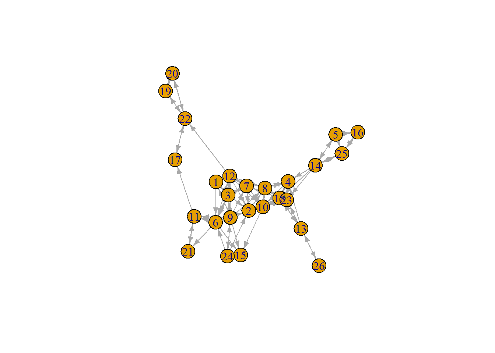
friendsadjmatrix <- as_adjacency_matrix(friendsigraph, sparse = F)
class(friendsadjmatrix)## [1] "matrix" "array"Construct a row-standardized spatial weight matrix as a weights list object. Set the option ‘zero.policy’ to TRUE because you have isolates.
friends <- mat2listw(friendsadjmatrix, row.names = NULL, zero.policy = T, style = "W")
class(friends)## [1] "listw" "nb"Conduct and interpret the Moran’s I test and the Lagrange multiplier tests. For the Lagrange multiplier tests, make sure you estimate a linear regression on Class 12b, not on the entire dataset.
moran.test(class12b$acthomew_rev, friends, zero.policy = T)##
## Moran I test under randomisation
##
## data: class12b$acthomew_rev
## weights: friends
## n reduced by no-neighbour observations
##
## Moran I statistic standard deviate = -1.2823, p-value = 0.9001
## alternative hypothesis: greater
## sample estimates:
## Moran I statistic Expectation Variance
## -0.24084048 -0.04166667 0.02412595olsregnew <- lm(acthomew_rev ~ female + age, data=friendsnodelist)
summary(olsregnew)##
## Call:
## lm(formula = acthomew_rev ~ female + age, data = friendsnodelist)
##
## Residuals:
## Min 1Q Median 3Q Max
## -1.22870 -0.22870 -0.09865 0.77130 0.90135
##
## Coefficients:
## Estimate Std. Error t value Pr(>|t|)
## (Intercept) 2.8834 3.8835 0.742 0.465
## female -0.1300 0.3206 -0.406 0.689
## age 0.1121 0.3217 0.349 0.731
##
## Residual standard error: 0.7767 on 23 degrees of freedom
## Multiple R-squared: 0.01168, Adjusted R-squared: -0.07426
## F-statistic: 0.136 on 2 and 23 DF, p-value: 0.8736lm.LMtests(olsregnew, friends, test = c("LMlag", "LMerr"), zero.policy = T)## Please update scripts to use lm.RStests in place of lm.LMtests##
## Rao's score (a.k.a Lagrange multiplier) diagnostics for spatial dependence
##
## data:
## model: lm(formula = acthomew_rev ~ female + age, data = friendsnodelist)
## test weights: listw
##
## RSlag = 4.1142, df = 1, p-value = 0.04252
##
##
## Rao's score (a.k.a Lagrange multiplier) diagnostics for spatial dependence
##
## data:
## model: lm(formula = acthomew_rev ~ female + age, data = friendsnodelist)
## test weights: listw
##
## RSerr = 2.1604, df = 1, p-value = 0.1416Estimate a SLM and the impacts. Interpret the results.
slm <- lagsarlm(acthomew_rev ~female + age, data = friendsnodelist, friends, zero.policy = T, Durbin = F)
summary(slm)##
## Call:lagsarlm(formula = acthomew_rev ~ female + age, data = friendsnodelist,
## listw = friends, Durbin = F, zero.policy = T)
##
## Residuals:
## Min 1Q Median 3Q Max
## -1.142192 -0.323879 -0.038523 0.455646 1.080405
##
## Type: lag
## Regions with no neighbours included:
## 15
## Coefficients: (asymptotic standard errors)
## Estimate Std. Error z value Pr(>|z|)
## (Intercept) 1.026147 3.269295 0.3139 0.7536
## female -0.040444 0.266647 -0.1517 0.8794
## age 0.392051 0.282600 1.3873 0.1653
##
## Rho: -0.38703, LR test value: 5.6789, p-value: 0.01717
## Asymptotic standard error: 0.13865
## z-value: -2.7915, p-value: 0.0052465
## Wald statistic: 7.7925, p-value: 0.0052465
##
## Log likelihood: -25.8883 for lag model
## ML residual variance (sigma squared): 0.4134, (sigma: 0.64297)
## Number of observations: 26
## Number of parameters estimated: 5
## AIC: 61.777, (AIC for lm: 65.456)
## LM test for residual autocorrelation
## test value: 0.73981, p-value: 0.38972im<-impacts(slm, listw=friends, zstats=TRUE, R=200)
sums<-summary(im, zstats=T)
data.frame(sums$res)## direct indirect total
## 1 -0.04194955 0.01279066 -0.02915889
## 2 0.40664251 -0.12398764 0.28265487data.frame(sums$pzmat)## Direct Indirect Total
## female dy/dx 0.8859268 0.9142622 0.8760656
## age dy/dx 0.1593922 0.2203135 0.1540044sums$direct##
## Iterations = 1:200
## Thinning interval = 1
## Number of chains = 1
## Sample size per chain = 200
##
## 1. Empirical mean and standard deviation for each variable,
## plus standard error of the mean:
##
## Mean SD Naive SE Time-series SE
## female dy/dx -0.04051 0.2824 0.01997 0.01997
## age dy/dx 0.44560 0.3167 0.02239 0.02239
##
## 2. Quantiles for each variable:
##
## 2.5% 25% 50% 75% 97.5%
## female dy/dx -0.6618 -0.2248 -0.03653 0.1617 0.4456
## age dy/dx -0.2762 0.2365 0.42027 0.6373 1.0670sums$indirect##
## Iterations = 1:200
## Thinning interval = 1
## Number of chains = 1
## Sample size per chain = 200
##
## 1. Empirical mean and standard deviation for each variable,
## plus standard error of the mean:
##
## Mean SD Naive SE Time-series SE
## female dy/dx 0.009714 0.09022 0.006380 0.006380
## age dy/dx -0.151084 0.12326 0.008716 0.008716
##
## 2. Quantiles for each variable:
##
## 2.5% 25% 50% 75% 97.5%
## female dy/dx -0.1627 -0.05252 0.0117 0.06561 0.20971
## age dy/dx -0.4475 -0.21196 -0.1306 -0.06531 0.04267sums$total##
## Iterations = 1:200
## Thinning interval = 1
## Number of chains = 1
## Sample size per chain = 200
##
## 1. Empirical mean and standard deviation for each variable,
## plus standard error of the mean:
##
## Mean SD Naive SE Time-series SE
## female dy/dx -0.03079 0.1975 0.01396 0.01247
## age dy/dx 0.29452 0.2066 0.01461 0.01461
##
## 2. Quantiles for each variable:
##
## 2.5% 25% 50% 75% 97.5%
## female dy/dx -0.4444 -0.1482 -0.02239 0.1200 0.3233
## age dy/dx -0.2033 0.1640 0.29102 0.4369 0.6621Estimate a SEM and a SAC. Interpret the results.
sem <- errorsarlm(acthomew_rev ~ female + age, data = friendsnodelist, friends, zero.policy = TRUE, Durbin=FALSE)
summary(sem)##
## Call:errorsarlm(formula = acthomew_rev ~ female + age, data = friendsnodelist,
## listw = friends, Durbin = FALSE, zero.policy = TRUE)
##
## Residuals:
## Min 1Q Median 3Q Max
## -1.219368 -0.362548 -0.058648 0.668676 0.912751
##
## Type: error
## Regions with no neighbours included:
## 15
## Coefficients: (asymptotic standard errors)
## Estimate Std. Error z value Pr(>|z|)
## (Intercept) 3.626056 3.129287 1.1587 0.2466
## female -0.063223 0.173322 -0.3648 0.7153
## age 0.047439 0.258850 0.1833 0.8546
##
## Lambda: -0.6606, LR test value: 4.4195, p-value: 0.03553
## Asymptotic standard error: 0.20347
## z-value: -3.2466, p-value: 0.0011678
## Wald statistic: 10.541, p-value: 0.0011678
##
## Log likelihood: -26.51801 for error model
## ML residual variance (sigma squared): 0.40272, (sigma: 0.6346)
## Number of observations: 26
## Number of parameters estimated: 5
## AIC: 63.036, (AIC for lm: 65.456)sac <- sacsarlm(acthomew_rev ~ female + age, data = friendsnodelist, friends, zero.policy = TRUE, Durbin=FALSE)
summary(sac)##
## Call:sacsarlm(formula = acthomew_rev ~ female + age, data = friendsnodelist,
## listw = friends, Durbin = FALSE, zero.policy = TRUE)
##
## Residuals:
## Min 1Q Median 3Q Max
## -1.20129 -0.39250 -0.02661 0.52543 0.96313
##
## Type: sac
## Coefficients: (asymptotic standard errors)
## Estimate Std. Error z value Pr(>|z|)
## (Intercept) 1.629415 3.231932 0.5042 0.6141
## female -0.049605 0.187263 -0.2649 0.7911
## age 0.308392 0.289345 1.0658 0.2865
##
## Rho: -0.28578
## Asymptotic standard error: 0.16817
## z-value: -1.6993, p-value: 0.08926
## Lambda: -0.46509
## Asymptotic standard error: 0.28125
## z-value: -1.6536, p-value: 0.098202
##
## LR test value: 7.0894, p-value: 0.028877
##
## Log likelihood: -25.18307 for sac model
## ML residual variance (sigma squared): 0.37746, (sigma: 0.61437)
## Number of observations: 26
## Number of parameters estimated: 6
## AIC: 62.366, (AIC for lm: 65.456)Estimate a SDM, SDEM, and GNM. Interpret the results.
sdm <- lagsarlm(acthomew_rev ~ female + age, data = friendsnodelist, friends, zero.policy = TRUE, Durbin=TRUE)
summary(sdm)##
## Call:lagsarlm(formula = acthomew_rev ~ female + age, data = friendsnodelist,
## listw = friends, Durbin = TRUE, zero.policy = TRUE)
##
## Residuals:
## Min 1Q Median 3Q Max
## -1.138462 -0.393020 -0.071874 0.541600 0.997817
##
## Type: mixed
## Regions with no neighbours included:
## 15
## Coefficients: (asymptotic standard errors)
## Estimate Std. Error z value Pr(>|z|)
## (Intercept) 1.117760 3.317296 0.3369 0.7362
## female 0.103236 0.530390 0.1946 0.8457
## age 0.356299 0.295713 1.2049 0.2282
## lag.female -0.219015 0.608668 -0.3598 0.7190
## lag.age 0.132206 0.089153 1.4829 0.1381
##
## Rho: -0.6814, LR test value: 4.5308, p-value: 0.03329
## Asymptotic standard error: 0.19709
## z-value: -3.4572, p-value: 0.00054573
## Wald statistic: 11.953, p-value: 0.00054573
##
## Log likelihood: -25.1831 for mixed model
## ML residual variance (sigma squared): 0.36062, (sigma: 0.60052)
## Number of observations: 26
## Number of parameters estimated: 7
## AIC: 64.366, (AIC for lm: 66.897)
## LM test for residual autocorrelation
## test value: 1.8013, p-value: 0.17956sdem <- errorsarlm(acthomew_rev ~ female + age, data = friendsnodelist, friends, zero.policy = TRUE, Durbin=TRUE)
summary(sdem)##
## Call:errorsarlm(formula = acthomew_rev ~ female + age, data = friendsnodelist,
## listw = friends, Durbin = TRUE, zero.policy = TRUE)
##
## Residuals:
## Min 1Q Median 3Q Max
## -1.018443 -0.384328 -0.018443 0.460170 0.942740
##
## Type: error
## Regions with no neighbours included:
## 15
## Coefficients: (asymptotic standard errors)
## Estimate Std. Error z value Pr(>|z|)
## (Intercept) 1.588711 3.073937 0.5168 0.6053
## female 0.664655 0.511935 1.2983 0.1942
## age 0.290486 0.279468 1.0394 0.2986
## lag.female -0.830860 0.575305 -1.4442 0.1487
## lag.age -0.074835 0.055828 -1.3405 0.1801
##
## Lambda: -0.78628, LR test value: 4.8955, p-value: 0.026926
## Asymptotic standard error: 0.17567
## z-value: -4.476, p-value: 7.606e-06
## Wald statistic: 20.034, p-value: 7.606e-06
##
## Log likelihood: -25.00073 for error model
## ML residual variance (sigma squared): 0.34007, (sigma: 0.58316)
## Number of observations: 26
## Number of parameters estimated: 7
## AIC: 64.001, (AIC for lm: 66.897)gnm <- sacsarlm(acthomew_rev ~ female + age, data = friendsnodelist, friends, zero.policy = TRUE, Durbin=TRUE)
summary(gnm)##
## Call:sacsarlm(formula = acthomew_rev ~ female + age, data = friendsnodelist,
## listw = friends, Durbin = TRUE, zero.policy = TRUE)
##
## Residuals:
## Min 1Q Median 3Q Max
## -1.099734 -0.343821 -0.031251 0.501777 0.993188
##
## Type: sacmixed
## Coefficients: (asymptotic standard errors)
## Estimate Std. Error z value Pr(>|z|)
## (Intercept) 1.149732 3.152258 0.3647 0.7153
## female 0.527579 0.520434 1.0137 0.3107
## age 0.338516 0.286044 1.1834 0.2366
## lag.female -0.691385 0.582170 -1.1876 0.2350
## lag.age 0.054943 0.368605 0.1491 0.8815
##
## Rho: -0.41117
## Asymptotic standard error: 1.0775
## z-value: -0.38159, p-value: 0.70277
## Lambda: -0.58953
## Asymptotic standard error: 0.99321
## z-value: -0.59357, p-value: 0.5528
##
## LR test value: 8.5826, p-value: 0.072423
##
## Log likelihood: -24.43648 for sacmixed model
## ML residual variance (sigma squared): 0.33713, (sigma: 0.58063)
## Number of observations: 26
## Number of parameters estimated: 8
## AIC: 64.873, (AIC for lm: 65.456)What is your conclusion after interpreting all these models?
6 5
library(network)
library(intergraph)## Warning: package 'intergraph' was built under R version 4.5.3library(sna)## Warning: package 'sna' was built under R version 4.5.3## Loading required package: statnet.common## Warning: package 'statnet.common' was built under R version 4.5.3##
## Attaching package: 'statnet.common'## The following objects are masked from 'package:base':
##
## attr, order, replace## sna: Tools for Social Network Analysis
## Version 2.8 created on 2024-09-07.
## copyright (c) 2005, Carter T. Butts, University of California-Irvine
## For citation information, type citation("sna").
## Type help(package="sna") to get started.##
## Attaching package: 'sna'## The following objects are masked from 'package:igraph':
##
## betweenness, bonpow, closeness, components, degree, dyad.census, evcent, hierarchy,
## is.connected, neighborhood, triad.censuslibrary(igraph)
library(ergm)## Warning: package 'ergm' was built under R version 4.5.3## Registered S3 methods overwritten by 'ergm':
## method from
## simulate.formula lme4
## simulate.formula_lhs lme4##
## 'ergm' 4.12.0 (2026-02-17), part of the Statnet Project
## * 'news(package="ergm")' for changes since last version
## * 'citation("ergm")' for citation information
## * 'https://statnet.org' for help, support, and other information## 'ergm' 4 is a major update that introduces some backwards-incompatible changes. Please
## type 'news(package="ergm")' for a list of major changes.##
## Attaching package: 'ergm'## The following object is masked from 'package:statnet.common':
##
## snctrllibrary(tidyverse)
library(haven)
load(url("https://github.com/rensec/sasr08/raw/main/classnet.rdata"))
summary(classnet)## IGRAPH 963ef71 DN-- 26 91 --
## + attr: name (v/c), sex (v/n), age (v/n), sourcevar (e/c)V(classnet)$sex <-as.numeric(V(classnet)$sex)
g <- asNetwork(classnet)
g## Network attributes:
## vertices = 26
## directed = TRUE
## hyper = FALSE
## loops = FALSE
## multiple = FALSE
## bipartite = FALSE
## total edges= 91
## missing edges= 0
## non-missing edges= 91
##
## Vertex attribute names:
## age sex vertex.names
##
## Edge attribute names:
## sourcevargplot(g, vertex.col=g %v% "sex"*2)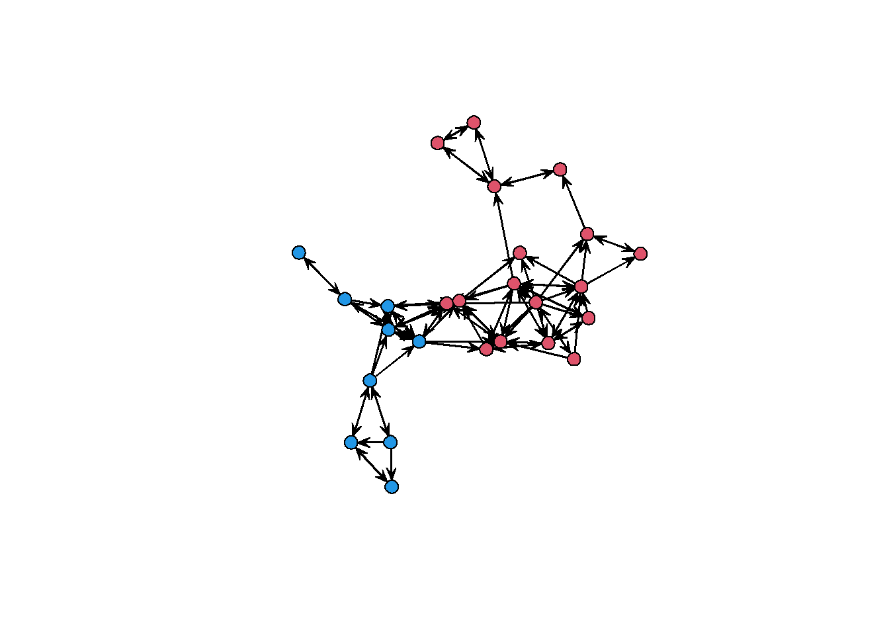
M1.g<-ergm(g ~ edges + mutual )## Starting maximum pseudolikelihood estimation (MPLE):## Obtaining the responsible dyads.## Evaluating the predictor and response matrix.## Maximizing the pseudolikelihood.## Finished MPLE.## Starting Monte Carlo maximum likelihood estimation (MCMLE):## Iteration 1 of at most 60:## Warning: 'glpk' selected as the solver, but package 'Rglpk' is not available; falling back to
## 'lpSolveAPI'. This should be fine unless the sample size and/or the number of parameters is very
## big.## 1## Optimizing with step length 1.0000.## The log-likelihood improved by 0.0022.## Convergence test p-value: 0.0026. Converged with 99% confidence.
## Finished MCMLE.
## Evaluating log-likelihood at the estimate. Fitting the dyad-independent submodel...
## Bridging between the dyad-independent submodel and the full model...
## Setting up bridge sampling...
## Using 16 bridges: 1 2 3 4 5 6 7 8 9 10 11 12 13 14 15 16 .
## Bridging finished.
##
## This model was fit using MCMC. To examine model diagnostics and check for degeneracy,
## use the mcmc.diagnostics() function.summary(M1.g)## Call:
## ergm(formula = g ~ edges + mutual)
##
## Monte Carlo Maximum Likelihood Results:
##
## Estimate Std. Error MCMC % z value Pr(>|z|)
## edges -2.7051 0.1747 0 -15.482 <1e-04 ***
## mutual 3.1611 0.3885 0 8.136 <1e-04 ***
## ---
## Signif. codes: 0 '***' 0.001 '**' 0.01 '*' 0.05 '.' 0.1 ' ' 1
##
## Null Deviance: 901.1 on 650 degrees of freedom
## Residual Deviance: 456.6 on 648 degrees of freedom
##
## AIC: 460.6 BIC: 469.6 (Smaller is better. MC Std. Err. = 0.9162)M2.g<-ergm(g ~ edges + mutual + nodefactor("sex", levels = 2) + nodematch("sex" ))## Starting maximum pseudolikelihood estimation (MPLE):## Obtaining the responsible dyads.## Evaluating the predictor and response matrix.## Maximizing the pseudolikelihood.## Finished MPLE.## Starting Monte Carlo maximum likelihood estimation (MCMLE):## Iteration 1 of at most 60:## 1 Optimizing with step length 1.0000.
## The log-likelihood improved by 0.0172.
## Convergence test p-value: 0.0588. Not converged with 99% confidence; increasing sample size.
## Iteration 2 of at most 60:
## 1 Optimizing with step length 1.0000.
## The log-likelihood improved by 0.0193.
## Convergence test p-value: 0.0008. Converged with 99% confidence.
## Finished MCMLE.
## Evaluating log-likelihood at the estimate. Fitting the dyad-independent submodel...
## Bridging between the dyad-independent submodel and the full model...
## Setting up bridge sampling...
## Using 16 bridges: 1 2 3 4 5 6 7 8 9 10 11 12 13 14 15 16 .
## Bridging finished.
##
## This model was fit using MCMC. To examine model diagnostics and check for degeneracy,
## use the mcmc.diagnostics() function.summary(M2.g)## Call:
## ergm(formula = g ~ edges + mutual + nodefactor("sex", levels = 2) +
## nodematch("sex"))
##
## Monte Carlo Maximum Likelihood Results:
##
## Estimate Std. Error MCMC % z value Pr(>|z|)
## edges -3.7431 0.2884 0 -12.979 <1e-04 ***
## mutual 2.7862 0.4064 0 6.857 <1e-04 ***
## nodefactor.sex.2 0.1858 0.1235 0 1.505 0.132
## nodematch.sex 1.4924 0.2995 0 4.983 <1e-04 ***
## ---
## Signif. codes: 0 '***' 0.001 '**' 0.01 '*' 0.05 '.' 0.1 ' ' 1
##
## Null Deviance: 901.1 on 650 degrees of freedom
## Residual Deviance: 415.3 on 646 degrees of freedom
##
## AIC: 423.3 BIC: 441.2 (Smaller is better. MC Std. Err. = 0.6659)M2.g.gof <- gof(M2.g)
M2.g.gof##
## Goodness-of-fit for model statistics
##
## obs min mean max MC p-value
## edges 91 64 90.14 112 0.86
## mutual 28 17 27.71 41 1.00
## nodefactor.sex.2 58 38 56.14 95 0.84
## nodematch.sex 79 52 78.28 103 0.90
##
## Goodness-of-fit for minimum geodesic distance
##
## obs min mean max MC p-value
## 1 91 64 90.14 112 0.86
## 2 104 111 190.11 262 0.00
## 3 80 116 191.17 242 0.00
## 4 57 33 100.25 141 0.12
## 5 48 0 33.58 82 0.48
## 6 18 0 9.27 46 0.36
## 7 5 0 2.68 34 0.34
## 8 0 0 0.70 20 1.00
## 9 0 0 0.12 7 1.00
## 10 0 0 0.01 1 1.00
## Inf 247 0 31.97 165 0.00
##
## Goodness-of-fit for out-degree
##
## obs min mean max MC p-value
## 0 1 0 0.50 4 0.82
## 1 4 0 2.33 7 0.50
## 2 4 1 5.30 10 0.80
## 3 5 1 5.64 14 0.94
## 4 6 2 5.65 13 0.90
## 5 3 0 3.49 7 0.98
## 6 0 0 1.88 6 0.32
## 7 1 0 0.83 3 1.00
## 8 1 0 0.29 2 0.54
## 9 0 0 0.07 1 1.00
## 10 1 0 0.02 1 0.04
##
## Goodness-of-fit for in-degree
##
## obs min mean max MC p-value
## 0 0 0 0.56 3 1.00
## 1 4 0 2.51 8 0.56
## 2 7 0 5.00 9 0.52
## 3 4 1 6.00 13 0.40
## 4 1 1 5.04 10 0.08
## 5 6 1 3.67 11 0.28
## 6 1 0 1.98 6 0.68
## 7 3 0 0.82 6 0.14
## 8 0 0 0.31 2 1.00
## 9 0 0 0.08 1 1.00
## 10 0 0 0.03 1 1.00
##
## Goodness-of-fit for edgewise shared partner
##
## obs min mean max MC p-value
## .OTP0 19 31 48.64 65 0.00
## .OTP1 24 11 29.71 52 0.54
## .OTP2 27 0 9.74 27 0.02
## .OTP3 14 0 1.72 9 0.00
## .OTP4 6 0 0.28 5 0.00
## .OTP5 1 0 0.05 2 0.08plot(M2.g.gof)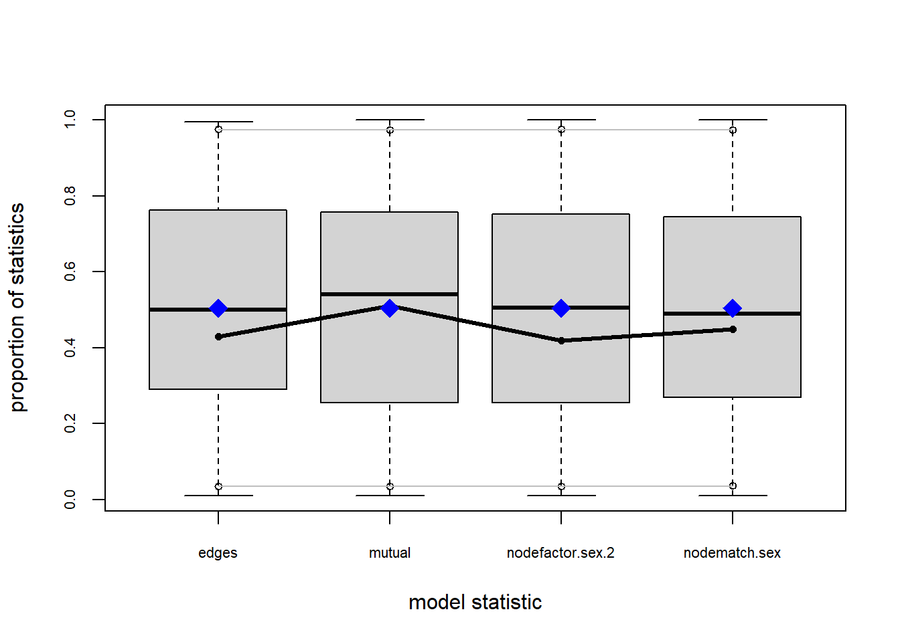
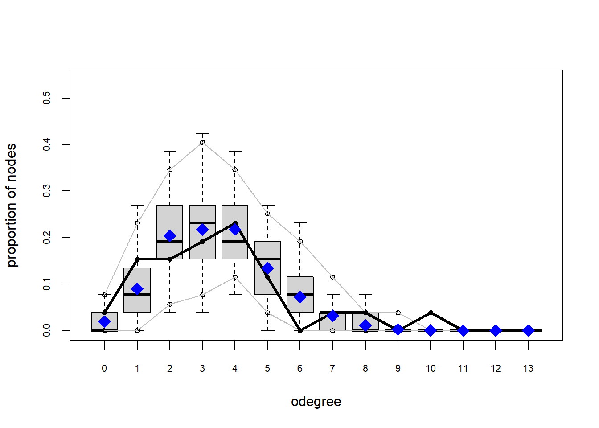
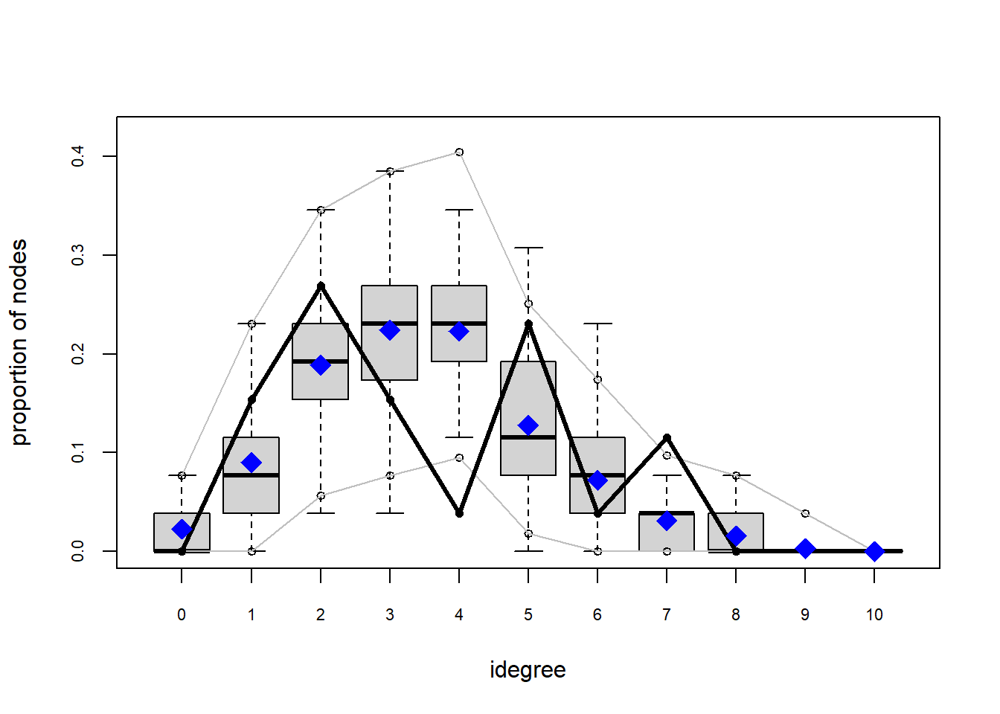
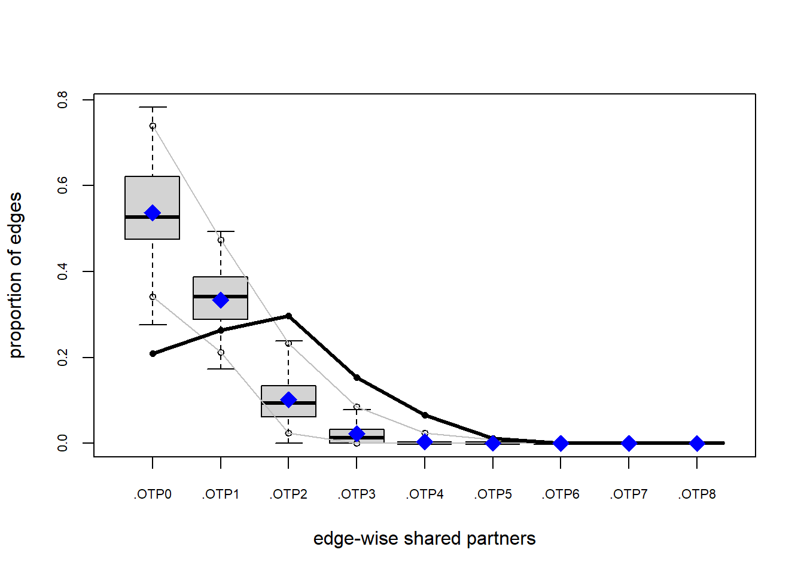
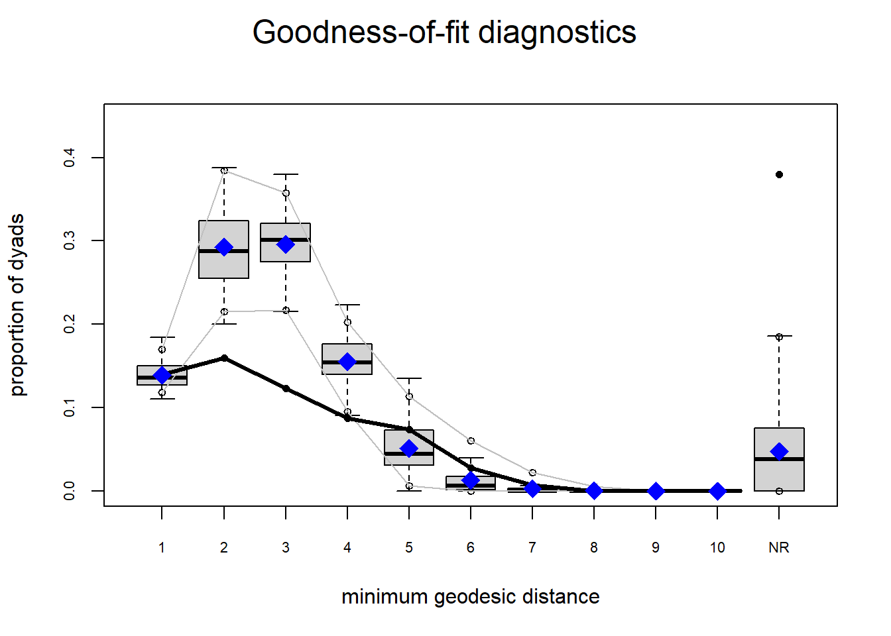